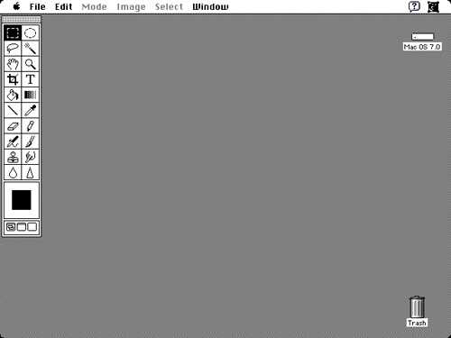

As a kid, I'd use the family computer to draw and play games. My mom had a disc and on it was an old version of Adobe Photoshop. I used this to create fun drawings which I couldn't do on paper. This was my first introduction to graphic design.

At the time, everything was new to me. I didn't know how to do anything but paint lines.
The computer was always super slow, and most of the time I'd find myself making colorful line drawings or playing games on Miniclip